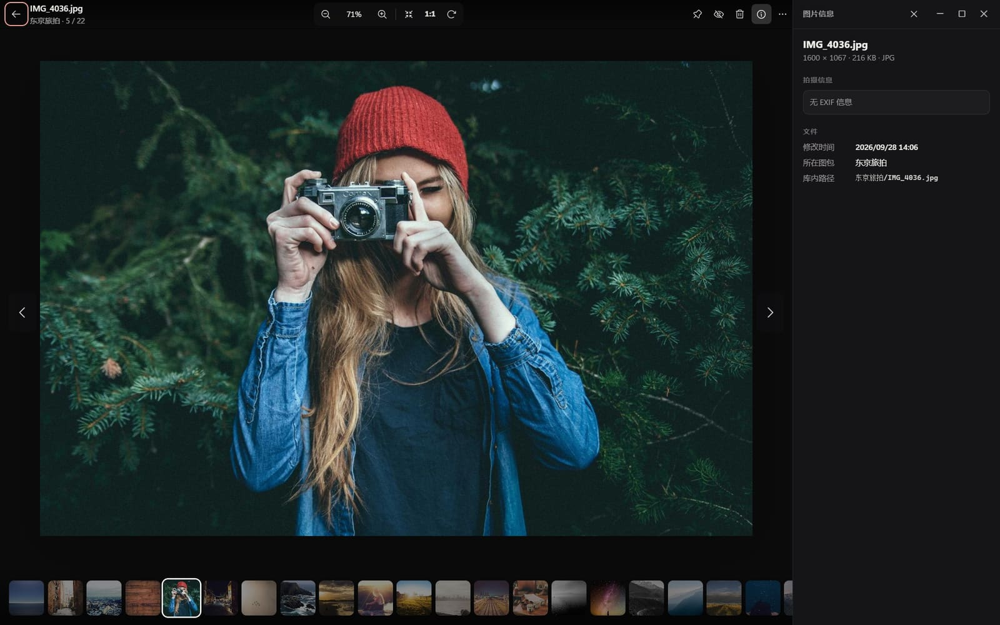
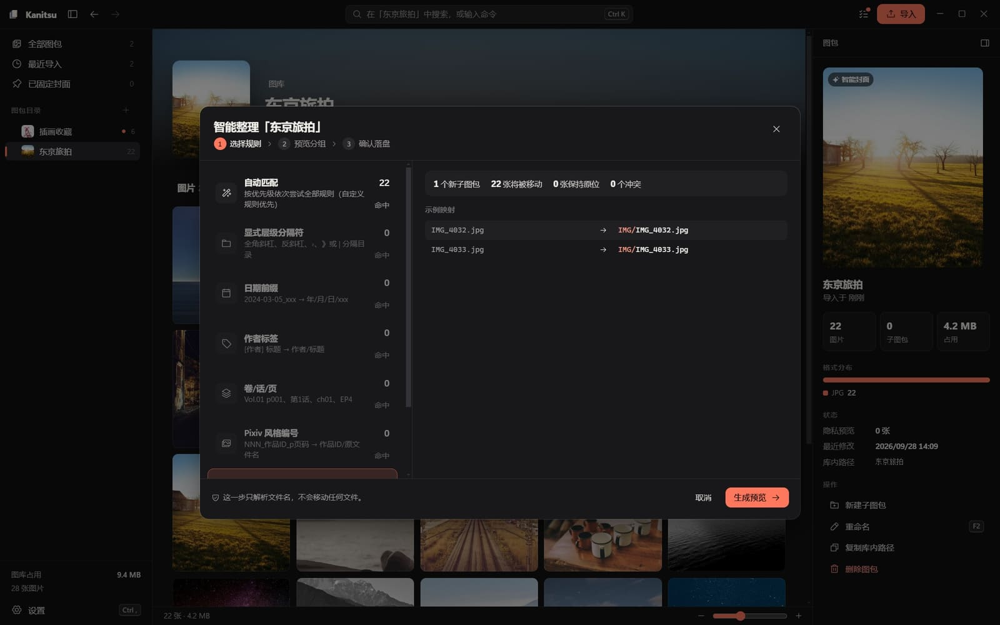
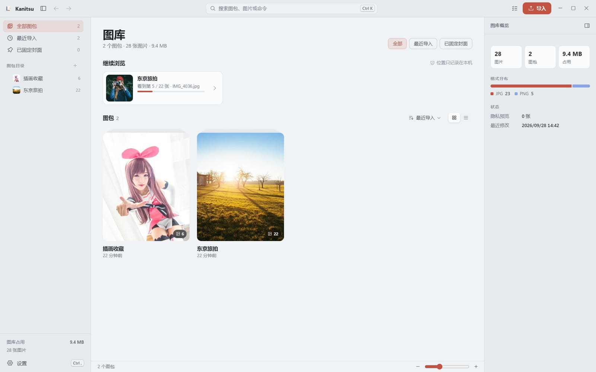
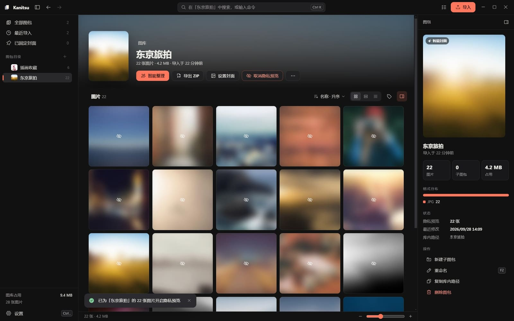

01
万级图库，顺滑到底
网格、原比例、列表三种布局，按行虚拟化，几万张一滑到底。
02
RAW 与 HEIC 直接看
主流格式白名单开箱即认，缩略图取自内嵌预览，无需转换工具。
03
整理先预览，可撤销
命名规则先出分组预览，确认之前不写一块磁盘。
04
导出即打包
ZIP 流式导出保留目录结构，附带 index.json 索引。
界面
每一屏，都为看图而生



隐私
照片，不出门。
整理照片的前提，是照片从未离开你的设备。
源目录只读
导入即复制副本，整理只发生在自己的库内，从不回写原文件夹。
不联网，不上传
没有账号体系，没有遥测，断网也能完整使用。
敏感图随手遮挡
网格、封面与查看器同步模糊，想看再点开。

下载
Windows 今天就能用
免安装、免管理员权限，下载按钮始终指向最新稳定版。
Android 客户端测试中，签名 APK 由 GitHub Actions 构建分发。
产物未签名，首次运行请选「更多信息 → 仍要运行」；各版本附带 SHA256SUMS.txt 供校验。